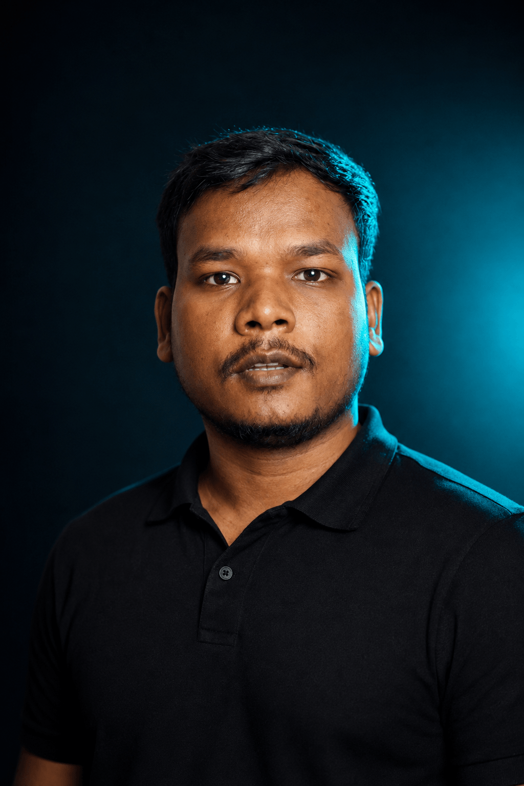

VIDEO EDITOR
& MOTION
GRAPHICS DESIGNER
I turn complex ideas, research and raw footage into engaging visual stories.
Specialized in documentary editing, YouTube storytelling, motion graphics and visual explainers.
SHOWREEL
A selection of editing, motion graphics and visual storytelling work.
SELECTED WORK
Documentaries, visual stories, motion graphics and digital content.
ABOUT ME
I'm a video editor and motion graphics designer focused on turning information into stories people actually want to watch.
I specialize in documentary-style editing, where research, storytelling, pacing and visuals need to work together. My workflow combines Premiere Pro for editing, After Effects for motion graphics and compositing, and Photoshop for visual design and thumbnails.
I particularly enjoy projects involving research-heavy subjects, explainers, social issues, current affairs, culture, people and stories that require strong visual communication.

SKILLS
A story-first toolkit for shaping ideas from first assembly to final frame.
Video editing
- Documentary editing
- Storytelling & narrative structure
- Pacing & B-roll editing
- Interview & YouTube editing
- Sound design & color correction
Motion graphics
- Kinetic typography
- Infographics & map animation
- Data visualization
- 2D animation & compositing
- Documentary graphics
Design
- Adobe Photoshop
- Thumbnail design
- Image manipulation
- Visual composition
- Basic graphic design
SERVICES
Thoughtful post-production for stories with something to say.
Documentary editing
Research-heavy storytelling, interviews, archival footage, B-roll, pacing, sound design and visual narrative.
YouTube video editing
Long-form videos designed around retention, storytelling and clear visual communication.
Motion graphics
After Effects animations, kinetic typography, maps, charts, infographics and visual explanations.
Video explainers
Transforming complex subjects and information into clear, engaging visual stories.
Social media content
Short-form videos, reels, shorts and promotional edits adapted for modern social platforms.
Thumbnail & visual design
Supporting Photoshop-based thumbnails and visual assets that belong to the story.
EDITING IS
STORYTELLING.
Good editing isn't about adding more effects. It's about knowing what to show, what to remove, when to slow down, when to accelerate, and how to make the audience care.
PROCESS
A clear, collaborative workflow that keeps the story in focus.
Discovery
Understand the topic, audience, objective and creative direction.
Story
Build the narrative structure and identify the strongest storytelling moments.
Edit
Assemble footage, interviews, B-roll, music and sound into a coherent story.
Visualize
Add motion graphics, maps, typography and visual effects where they improve the story.
Polish
Sound design, color correction, pacing refinement and final quality control.
GOOD WORK
TAKES CARE.
Story-first editing
Every cut should serve the story.
Documentary experience
Specialized interest in research-driven and documentary-style content.
Motion graphics + editing
Editing and After Effects work handled within one workflow.
Attention to detail
Pacing, sound, transitions, typography and visual consistency matter.
Clear communication
Professional communication and an organized project workflow.
HAVE A STORY
TO TELL?
Let's turn your footage and ideas into something worth watching.